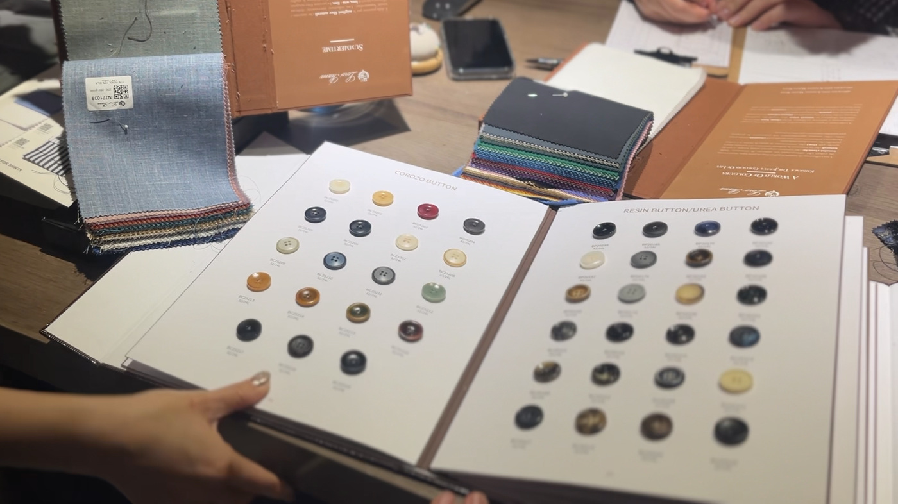
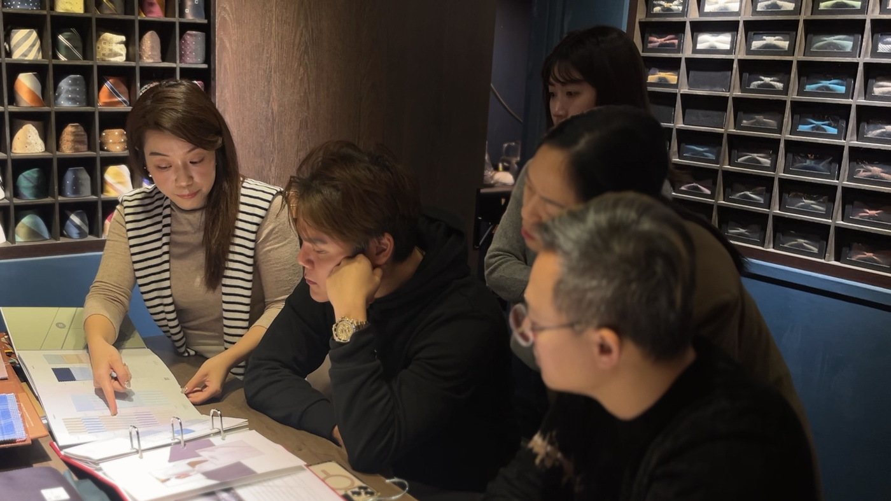

量完身之後，布樣被攤開來，師傅問你要哪一種領子。
很多人是在這一刻才發現，訂製西裝要決定的事情比想像中多。領子、門襟、扣位、布料、鈕扣、內裡、袖口，一路問下來，而且大部分的選項都不會影響合不合身。
量身解決的是合身；領型、扣位、布料與細節，則會改變這套西裝最後呈現的正式程度、比例與整體風格。同樣的尺寸，細節不同，穿起來的感覺也會不同。
這一篇把訂製時會被問到的選項整理出來，說明每一項通常會影響什麼，以及形象顧問陪在旁邊的時候，會一起看哪些事。要先說的是，下面沒有一條是規則，服裝的判斷幾乎都要連著整體條件一起看。
一套訂製西裝，尺寸之外的六類選項（左右滑動）
01
領型
平駁領、劍領、青果領，影響整體的正式程度
02
門襟與扣位
單排或雙排、幾顆扣、扣位高低，影響視覺重心
03
布料
支數、織法、季節，關係到耐不耐穿與會不會皺
04
鈕扣
牛角、貝殼或樹脂，近距離才看得見的質感
05
內裡與刺繡
脫下外套的那一刻才會露出來的部分
06
襯衫
領型、領台、袖口與門襟，比西裝更常被看見
沒有單一標準答案，要連著場合、頻率、身形與風格一起看。
領型：影響整體正式程度與上半身線條
領型是進門後最早被問到的問題，也是遠遠看過去最先被辨認的特徵。
| 領型 | 長相 | 適合的場合與注意事項 |
|---|---|---|
| 平駁領 Notch | 上下領片之間有一個 V 形缺口，線條平順 | 單排扣商務西裝最常見的配置，通用性也最高。日常會議、提案與形象照都相對安全。 |
| 劍領 Peak | 領尖向上揚起，指向肩線 | 正式程度通常較高，視覺上有把肩線拉開、身形拉長的效果。存在感較強，常見於雙排扣與重要場合，是否適合仍要連同肩寬、領片寬度與整體版型一起看。 |
| 青果領 Shawl | 整條圓弧連續，沒有缺口 | 多半出現在晚宴與禮服的場合。用在白天的商務場合，通常會顯得過於隆重。 |
除了種類，領片的寬度也要連著肩寬與整體比例一起看。很窄的領片配上較寬的肩，上半身容易顯得更壯；領片偏寬，身形較小的人也可能被壓住。這一項沒有標準答案，要站在鏡子前面比對過才知道。
門襟與扣位：影響視覺重心與身形比例
單排還是雙排、幾顆扣子、扣位開在哪個高度，這三件事加起來，對整體比例的影響比多數人以為的明顯。
單排二扣是商務場合的標準，扣上排第一顆、第二顆留著不扣。單排三扣的翻領版本（第一顆藏在翻下來的領片後面）會把視覺重心稍微往上帶，身高較高的人穿起來比例好看。單排一扣的 V 形開口最長，在一般商務西裝裡相對少見，比較常出現在晚宴服或偏時裝感的剪裁；如果主要用途是日常商務，二扣通常更好用。雙排扣前身重疊較多，視覺份量通常比較強，是否適合仍要連同腰身、扣位、領片與整體版型一起看。
比較少被討論的是扣位的高低。扣位偏高時，腰線的視覺位置通常也跟著上移，腿看起來比較長；扣位偏低則容易把上半身拉長。實際效果還要看身高、腰線位置與領片開口，但這是訂製才有的調整空間，成衣只能挑現成的比例。
布料：Super 數字看的是纖維細度
攤在你面前的布樣通常會標著 Super 100s、120s、150s 這樣的數字。這組數字主要跟羊毛纖維的細度有關，數字越高，代表使用的羊毛纖維越細，手感通常也越細緻。
但它不是判斷布料好壞的單一等級。實際的手感、挺度、耐穿度與皺褶表現，還會受到布重、紗線結構、織法與後整理影響。所以如果是高頻率穿著的主力，比起只追求較高的 Super 數字，更值得把布重、織法、回彈與日常保養需求一起看過。較細緻的高 Super 布料可以有很好的手感，但適不適合每天穿，要看整塊布的規格，不是只看那個數字。
織法對外觀的影響往往比那個數字更直接。平織乾淨俐落；斜紋（華達呢）有明顯紋理，通常也比較耐穿；鳥眼與鯊魚皮這類組織，遠看是素色，近看才有層次，在形象照裡會多出一層質感。混紡與四季料常見的理由是回彈與耐穿，不等於廉價，長時間坐著開會的人反而容易受惠。
如果這套西裝會出現在形象照裡
這一段是我們比較少在西服店裡聽到的角度，因為它跟好不好看無關，只跟會不會被拍好有關。
第一，布料上規則而細密的紋理，碰上感光元件同樣規則的畫素排列，兩組格線互相干涉之後，畫面上可能浮出一層原本不存在的波紋，也就是摩爾紋。它常被列進「拍照不能穿」的清單，但實務上不必為了拍照放棄想要的紋樣：會不會發生，跟感光元件、拍攝距離、焦距與角度都有關，不是單看布料就能斷定；一般西裝的格紋尺度多半不到會出問題的程度，千鳥格我們也拍過，成像沒有問題。真的出現了，後期也有處理的空間。
第二，高光澤的布料在棚燈下會出現大片反光。緞面領與亮面混紡在現場肉眼看是漂亮的，進了照片常常變成一塊白。
第三，深色西裝搭配深色背景的時候，要特別留意人物與背景的分離。如果光線與明度太接近，布料的輪廓與紋理會比較難保留；中性的深藍與炭灰在這種情況下通常比純黑好處理。
這三件都不是禁忌，是取捨：知道它們會怎麼影響畫面，挑布的時候心裡就有底。
鈕扣、內裡與刺繡：沒有人會特別看，但你自己知道
鈕扣。牛角與貝殼有天然紋理，每一顆的深淺略有差異，光線下不會死板；樹脂扣均勻、耐用、價格低。深色西裝配同色系的牛角扣是安全的選擇，想要一點變化，換扣子是成本最低的一種。

袖口的真開衩。袖扣可以真的解開，常被視為比較講究的細節，在訂製與部分高階成衣都看得到。要不要留是個人選擇，它比較像是穿的人自己知道的事，不太適合當成展示的重點。
內裡。素色最安全，花色內裡是私下的個性。內裡平常露出的面積不多，多半是在穿脫外套或外套敞開的時候才比較明顯，所以它的存在感要能承受那幾秒被看到。
刺繡。姓名字母通常繡在內袋上方或內裡，字體與顏色越低調越耐看。繡在袖口或其他外顯位置屬於時裝的語彙，在保守的商務場合要先想清楚。
襯衫：比西裝更常被看見
外套會脫，襯衫不會。真正陪你度過整場會議的是它，可是它被討論的次數遠比西裝少。
| 項目 | 選項 | 影響什麼 |
|---|---|---|
| 領型 | 標準領、寬角領、小方領、扣領 | 標準領通用性最高；寬角領的領尖向兩側打開，適合搭份量較足的領帶結，也要連同西裝領片與頸部比例一起看；小方領視覺上比較輕，正式程度相對低；扣領偏休閒，正式提案的場合通常會避開。 |
| 領台高度 | 高領台、一般領台 | 影響側面的頸部線條與下顎的呈現。頸部較長的人常會用高一點的領台平衡，實際仍要試穿比較。 |
| 袖口 | 單袖扣、雙袖翻（法式袖） | 單袖扣日常實用；雙袖翻要搭袖扣配件，正式度高，也多了一個可以表現分寸的細節。 |
| 前門襟 | 明門襟、暗門襟 | 明門襟是標準；暗門襟把鈕扣藏起來，畫面乾淨，適合禮服場合與需要極簡構圖的拍攝。 |
還有一個常被提到的視覺參考：讓襯衫袖口在西裝袖口外露出一小段，大約一公分上下。這一段留白會讓手臂的線條收乾淨，露太多容易顯得鬆散，完全不露則會讓整隻手臂看起來被切斷。實際長度仍要看手臂比例、襯衫袖長與個人穿著習慣。
顧問陪在旁邊，看的是什麼
西服店提供的是選項與工藝，這一點他們比誰都專業。至於這些選項要對得上什麼，是另外一件事。
陪同的時候，至少會先看三件事：主要場合、穿著頻率，以及這套衣服要和現有的衣櫥怎麼配合。角色、身形與預算則會影響最後的細節取捨。

一位每週要見三次客戶的業務，跟一位一年出席兩場典禮的人，往下走的方向會不一樣。前者通常需要耐穿、好整理、單獨穿與搭配都成立的那一套；後者則可以把預算放在手感與細節上。同樣一句「我想訂一套西裝」，接下來要問的問題其實不同。
也因為這樣，有些加價項目值得加，有些可以省下來。真開衩、更細緻的布料、特殊內裡都可以做，但每一項要不要做，看的是這套衣服的用途，而不是它有多罕見。把該花的花在對的地方，剩下的預算有時候可以再多做一件襯衫。
要說明的是分工：CHUN.EN 不做西服製作。顧問評估之後如果認為訂製適合你，也取得你的同意，會安排與長期配合的店家碰面並陪同前往；到了現場，布料、顏色、款式與領型這些選擇，顧問會給明確的建議，而不是把選項留給你自己判斷。陪同訂製屬於定位與服裝策略確認之後的採購協助，依實際需求安排。不同的專業各自處理哪一段，〈形象顧問是什麼〉有完整的拆解。
尺寸先把衣服做合身，之後的細節，才決定它呈現什麼樣的風格與正式程度。
走進西服店之前，先確認三件事
第一，這套衣服主要要處理的是哪一種場合。日常客戶會議、上台演講、頒獎典禮、拍形象照，需求的重疊沒有想像中多。
第二，你已經有的那幾套，缺的是哪一種。多數人的衣櫥不是缺西裝，是三套顏色與正式度都差不多的西裝，卻沒有一套能應付比較輕鬆的場合。
第三，時間。訂製通常要數週，中間還會安排一到兩次試穿修改，實際天數依店家的工序與排程而定。時間要從你要穿它的那一天往回推，不是從今天往前算。
下一次布樣攤開在你面前的時候，要想的其實不只是喜歡哪一塊布，還有這套衣服接下來要陪你去哪些場合。